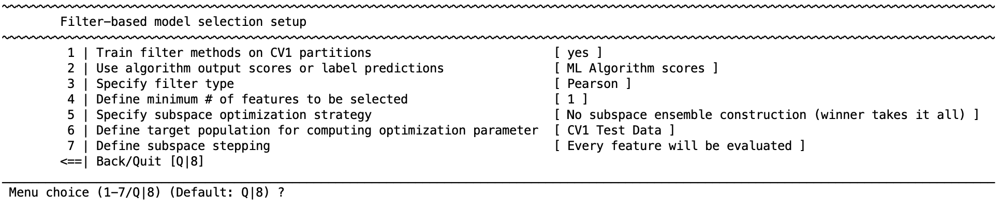
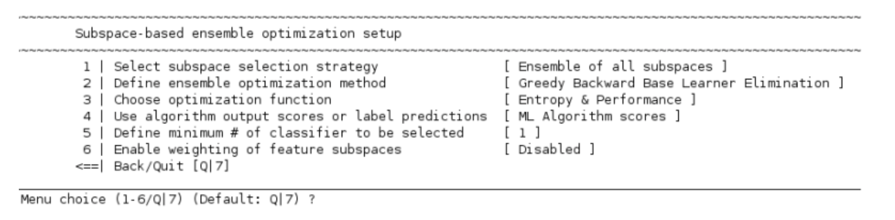
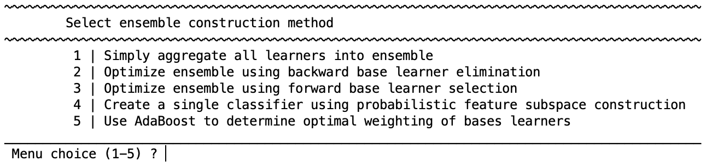
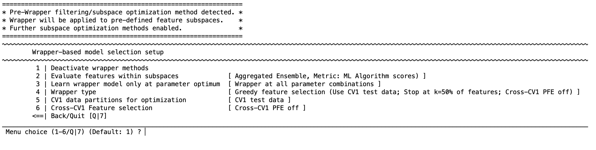
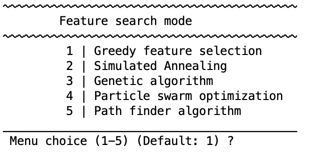
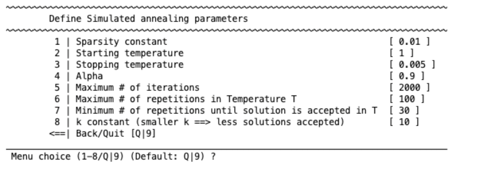
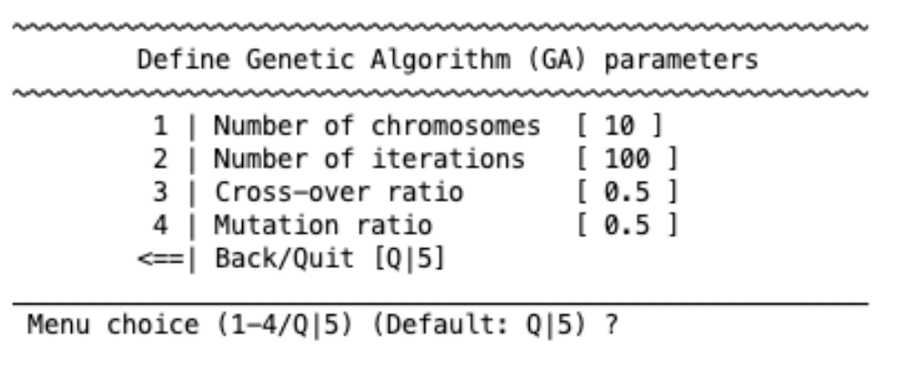
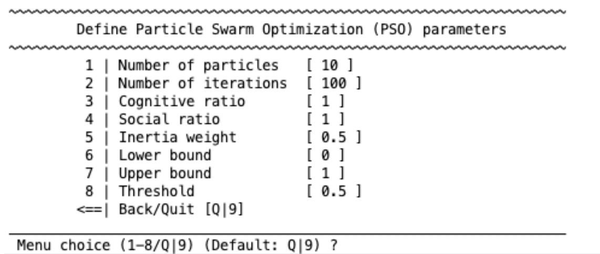
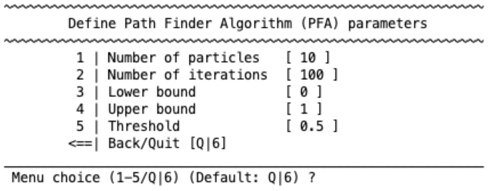

Ensemble generation strategies (NM 1.4)#
NeuroMiner trains ensembles at the CV2 level by pooling models learned inside the CV1 folds of a nested, repeated cross‑validation design (see Fig. 9). Version 1.4 generalizes this engine with diversity‑aware optimization, probabilistic feature extraction (PFE), boosting for classification and regression, and adaptive wrappers with a natural stopping rule.
Filter‑based ensemble generalization#
The Subspace Selection Strategy acts as a filter: you pre‑rank variables and form feature subspaces, train one base learner per subspace within CV1, then keep either the single best subspace or an ensemble of high‑performing subspaces for CV2 aggregation.

Where to enable#
Menu: Filter‑based model selection setup →
1 | Train filter methods on CV1 partitions — toggles filter‑based subspace optimization (default off).
Prediction metric (classification)#
2 | Use algorithm output scores or label predictions
Predicted labels (hard) → majority vote
Algorithm scores (soft) → mean of probabilities/scores
(Regression uses scores automatically.)
Multi‑class ranking mode (classification)#
When multi‑class is enabled: Optimize for multi-class settings [ binary | multi-group ] — configures how ranks are computed across classes.
Evaluation mode#
Subspace — build/evaluate blocks of ranked features and select one or more subspaces.
Ranking — keep the top‑percent of a single ranking (no subspace ensembles).
If Ranking is chosen, set
Define percentile cut-off threshold for ranked features(default 95).
Choose a filter type (Filter.type)#
Classification filters:
Mutual information (FEAST toolbox)
mRMR (Peng et al.)
Pearson / Spearman correlation
SIMBA (margin‑based)
G‑flip (margin‑based) — with limit‑to‑selected‑features toggle
IMRelief (margin‑based)
Increasing feature subspace cardinality
Random subspace sampling
Relief (classification) — set k nearest neighbors
F‑Score (ANOVA signal/noise)
Bhattacharyya distance
Regression filters:
Mutual information (FEAST)
mRMR
Pearson / Spearman correlation
RGS (regression ranker)
Increasing feature subspace cardinality
Random subspace sampling
Relief (regression / RReliefF)
Defaults: classification → Pearson (
Filter.type=3,Filter.Pearson=1); regression → mRMR (Filter.type=2). Minimum features default 1.
Minimum number of features#
Define minimum # of features to be selected — lower bound for any candidate subspace.
Subspace optimization strategy (post‑training selection)#
After training one model per subspace, choose:
Subspace with maximum argmax — winner‑takes‑all
Subspace ensemble with maximum argmax — keep the top‑X subspaces
Subspace ensemble with maximum argmax above a percentile — keep top X%
All‑subspace ensemble — keep all subspaces
If you pick an ensemble (2–4), configure how base learners are combined:

Ensemble optimization methods
Simply aggregate all learners — bagging‑style averaging (hard/soft)
Backward base‑learner elimination — greedy backward search with criteria such as Entropy, Kappa, Q‑statistic, Double‑fault, Bias–Variance/Ambiguity, or Performance; optional inverse‑error weighting; set minimum # learners

Forward base‑learner selection — greedy forward search (same criteria as 2)
Create a single classifier using probabilistic feature subspace construction (PFE) — build a consensus feature mask from CV1 subspaces (set an agreement threshold) and retrain one model
Use AdaBoost to determine optimal weighting of base learners — boosting with configurable loss, L2, and diversity terms (see “Boosting” below)
Define target population for computing optimization parameter — evaluate criteria on CV1 train, CV1 test, or both (recommended: train + test)
Define subspace stepping — form subspaces in blocks of X% of ranked features (e.g., 10%, 20%, …)
Important
Once winning subspaces are fixed, the subspace features can be handed to a wrapper (below) for embedded optimization.
Cost/selection population#
Define target population for computing optimization parameter — pick CV1 train, CV1 test, or train + test for robust selection.
Subspace stepping#
Define subspace stepping — enable and set the % block size used to create cumulative ranked subspaces.
Wrapper‑based model selection#
Wrappers search feature subsets that maximize CV1 performance. NM supports Greedy, Simulated Annealing (SA), Genetic Algorithm (GA), Particle Swarm (PSO), and Path Finder (PFA) wrappers.

Activation & routing#
Activate / Deactivate wrapper methods
If a Filter with Subspaces ran first, enable
Evaluate features within subspacesso the wrapper works inside each subspace; optional subspace stepping here as wellLearn wrapper model only at parameter optimum— restrict wrapper search to the best CV1 hyper‑parameters (when a grid exists)

Choose and configure a wrapper#
Greedy feature selection (forward/backward):
Search direction (forward/backward)
Early stopping (e.g., stop at 50% of pool)
Feature stepping (single features vs. % blocks)
Knee‑point thresholding (optional)
Simulated Annealing — temperature, cooling, iterations

Genetic Algorithm — population, crossover, mutation, elites, generations

Particle Swarm Optimization — swarm size, inertia, cognitive/social terms

Path Finder Algorithm — path‑based metaheuristic (NM internal)

Data used for wrapper optimization#
CV1 data partitions for optimization — choose CV1 training, CV1 test, CV1 full, or CV1 training + CV1 test.
Cross‑CV1 feature selection (PFE) in wrappers#
Cross-CV1 feature selection opens a menu to consolidate features across CV1 folds:
Enable optimization across CV1 (yes/no)
Extraction mode:
Agreement with tolerance window — keep features appearing in ≥ p% of folds, with a fallback tolerance and a minimum # features
Absolute top‑N most consistent
Top‑p% most consistent
Apply consistency‑based ranking:
Retrain all CV1 models after pruning unselected features, or
Retrain all CV1 models using the same selected feature space
CV2 prediction & aggregation#
Top‑level (More ensemble learning options) controls how CV2 predictions are produced:
Always use ensemble prediction
Classification metric: Target matrix (majority voting) (hard) or Decision/Probability value matrix (soft); Regression uses scores
Retrain classifiers with the full CV1 partition? — optional refit on all CV1 data before CV2
Aggregating predictions across CV2 permutations:
Mean ensemble prediction across permutations (grand mean) — average the CV2 ensembles from each permutation
Grand ensemble constructed across permutations — pool all base learners from all permutations into one larger ensemble
New in NM 1.4 — Diversity & regularized selection (how to configure)#
Where
Filter‑based → Optimize ensemble → Forward/Backward → set Optimization criterion to Performance + Diversity and enable Regularization (size penalty, diversity weight)
Wrapper‑based → chosen wrapper → enable Diversity‑aware objective and Min # base learners (subset size control)
What
Joint objective (ensembles): [ \text{Score} = \text{Perf} ;-; \lambda\cdot\text{Complexity} ;+; \mu\cdot\text{Diversity} ] Works for binary, multi‑class, and regression ensembles with metrics including Vote Entropy, Kappa, Q‑statistic, Double‑fault, Bias–Variance/Ambiguity, and Regression variance.
Boosting module (classification & regression)#
Within Ensemble optimization you can select Boosting to learn non‑negative weights for base learners under L2 and diversity regularization:
[ J(\mathbf{w}) ;=; L!\bigl(\mathbf{y},, H\mathbf{w}\bigr);+;\lambda|\mathbf{w}|_2^2;+;\alpha,\mathbf{w}^\top R,\mathbf{w},\quad \mathbf{w}\ge 0,;\mathbf{1}^\top\mathbf{w}=1. ]
Classification losses:
logloss,ridge,expgrad(AdaBoost‑style multiplicative updates)Regression diversity kernels:
residual-cov,residual-corr,residual-laplKey parameters:
λ(L2),α(diversity kernel weight), R (diversity kernel),eta(expgrad step),T(iterations), plusdiagMode,scaleTo,autoAlphato auto‑scale diversity weight to a target fraction of loss magnitude.
SubSpaceStrat mapping. Internally, ConstructMode values are: 0 = Simple aggregation, 4 = PFE, 5 = Boosting.
Adaptive & natural‑stopping wrappers (Greedy forward/backward)#
NM 1.4 replaces arbitrary early‑stop fractions with an adaptive, redundancy‑aware regularizer and a natural stopping rule. The wrapper maintains a per‑feature refusal vector (r) that discourages redundant additions; the effective weight (\lambda_{\text{eff}}) is set automatically from the MAD of recent gains (or fixed manually):
Penalized score for candidate feature (j): [ v^{\text{pen}}j ;=; v_j ;-; \lambda{\text{eff}}, r_j. ]
Update of refusal vector (schematic): [ r \leftarrow \gamma r ;+; \eta_0 ;+; \eta_1 (1-w_t),\phi(s), ] where (s) is similarity (e.g., (|\mathrm{corr}|)) to accepted features and (\phi) is a smooth, asymmetric redundancy penalty.
Natural stop: stop when the best penalized margin fails to exceed a noise‑aware tolerance [ \tau ;=; \max!\bigl(\tau_{\text{abs}},, Z_{\text{mad}} \cdot 1.4826 \cdot \mathrm{MAD}(\Delta v)\bigr). ]
Figure 1 on page 4 of the wrapper white paper illustrates (\phi(s)): it encourages weak correlations (a shallow “well” around moderate (s)) and penalizes near‑duplicates sharply as (s\to 1); sliders (c,w,\beta_{\text{well}},\beta_{\text{hi}},\sigma_{\text{lo}},\sigma_{\text{hi}}) control the well’s location/depth and transition smoothness. Expert mode includes a live plot helper.
Key tunables (expert mode) — typical effects/ranges are given in the white paper’s Table 1:
(\gamma) (decay of past refusals), (\eta_0) (global drift), (\eta_1) (penalty amplitude)
(\lambda_{\text{eff}}) (auto from MAD or manual)
(c,w) (moderate‑redundancy band center/width)
(\beta_{\text{well}},\beta_{\text{hi}}) (well depth / high‑similarity barrier)
(\sigma_{\text{lo}},\sigma_{\text{hi}}) (transition softness)
(\tau_{\text{abs}}, Z_{\text{mad}}) (baseline tolerance, MAD multiplier)
Multi‑class wrappers. Each class maintains its own subset and refusal vector; class‑wise refusals are aggregated via the median into a single penalty during selection; the same natural stop applies.
Notes to readers#
Ensemble‑based optimization (SubSpaceStrat) unifies simple averaging, diversity‑driven forward/backward selection, PFE, and boosting; the joint objective allows trading accuracy, sparsity, and diversity; see the ensemble white paper for formulas and control parameters.
Wrappers now feature adaptive regularization and a natural, noise‑aware stopping rule; see the wrapper white paper for the penalty function, parameter roles, and multi‑class extension.